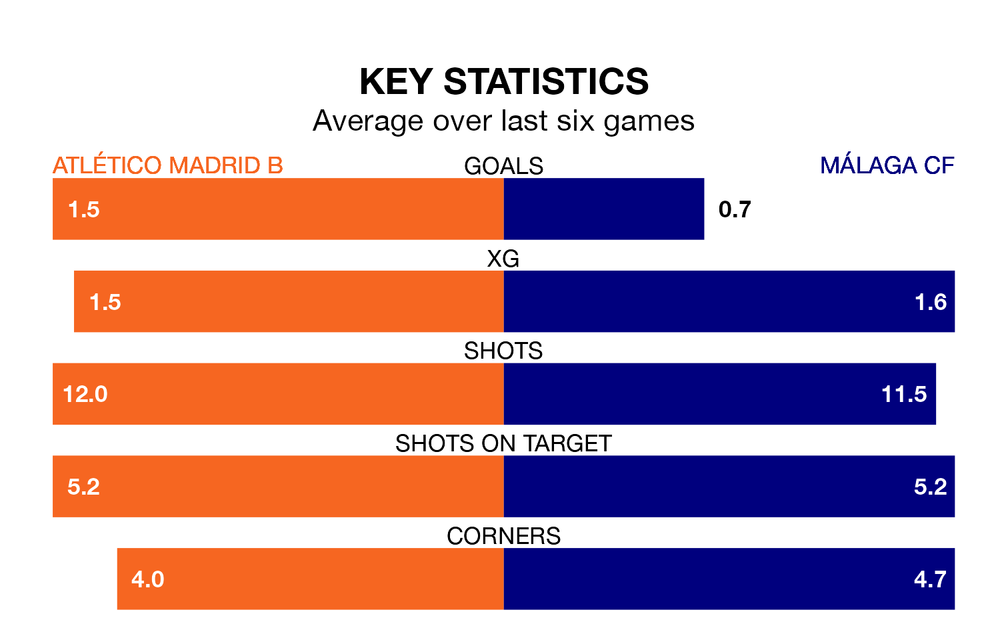

Atlético Madrid B face a challenge to maintain their high-scoring form at home against a tight Málaga CF defence on Sunday.
With 46 goals in 31 games, Atlético Madrid B are the fourth-highest scorers in Primera Division RFEF Group 2 ahead of the 5pm kick-off at Miniestadio Cerro del Espino.
They face a Málaga side who have scored 43 in 31 matches, but conceded only 21 goals, putting them top of the league's tightest defences.
In Roberto Fernández Jaén, Málaga have one of the league's most on-form strikers so far this season. He has notched 10 goals in 23 appearances, to sit second in the scoring charts.
His goal rate of one every 185 minutes is quicker than that of Diego Vicente Bri Carrazoni, Atlético Madrid B's top scorer with a goal every 208 minutes, and a total of seven goals in 21 games.
The visitors are fourth in the table after 31 games, of which they have won 16 and drawn 10, earning 58 points.
The home team are five places behind Málaga in ninth, with 10 wins and 12 draws putting them on 42 points.
Atlético Madrid B are in reasonable form in Primera Division RFEF Group 2, with three wins and two draws from their last six games.
With two wins and four draws over that period, Málaga's form is slightly worse – they have taken 10 points from 18, compared to Atlético Madrid B's 11.
Atlético Madrid B's last match was on Sunday, a 3-0 win against Atlético Sanluqueño CF, with, Bri Carrazoni and Sergio Guerrero Romero getting the goals for Atlético Madrid B.
Málaga drew 1-1 with Ceuta last time out, also on April 7, with Juan De Dios Rivas Margalef on the scoresheet.
Updated: 11:20 (UTC), 09/04/24